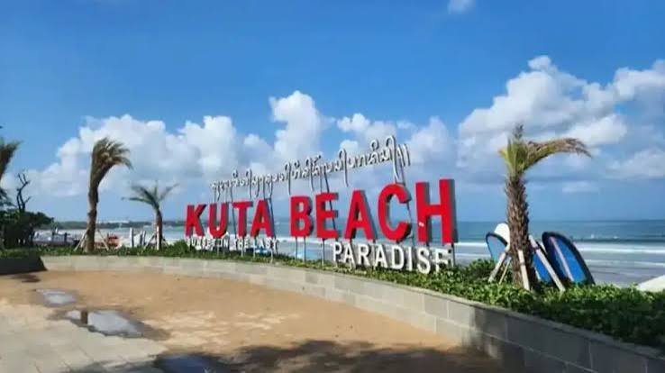
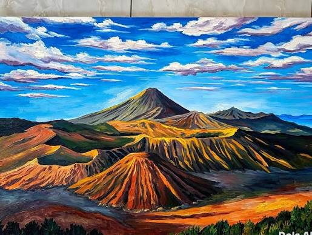
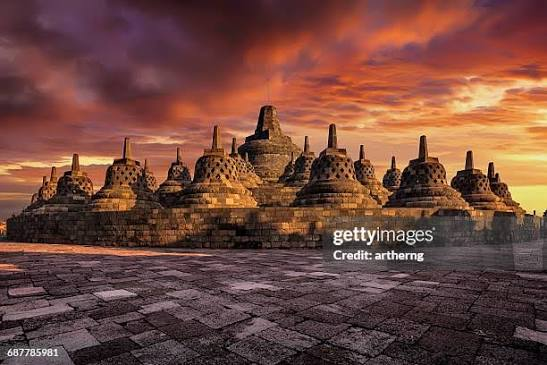
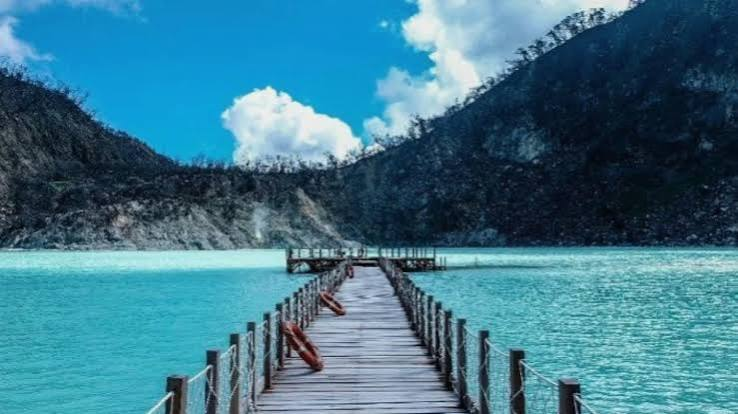
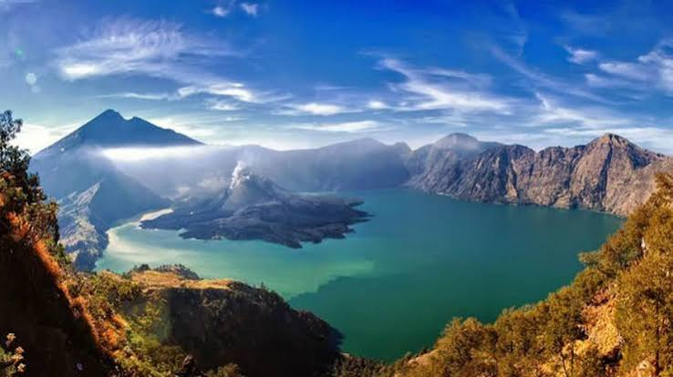
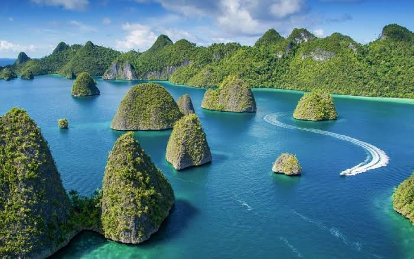
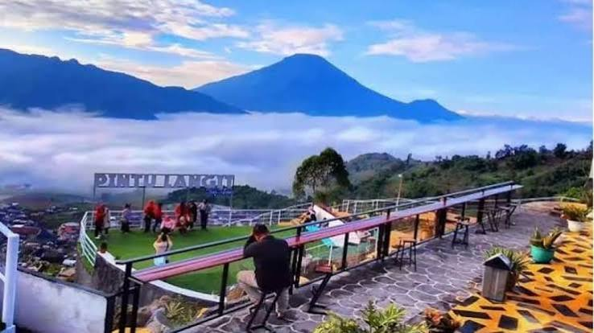
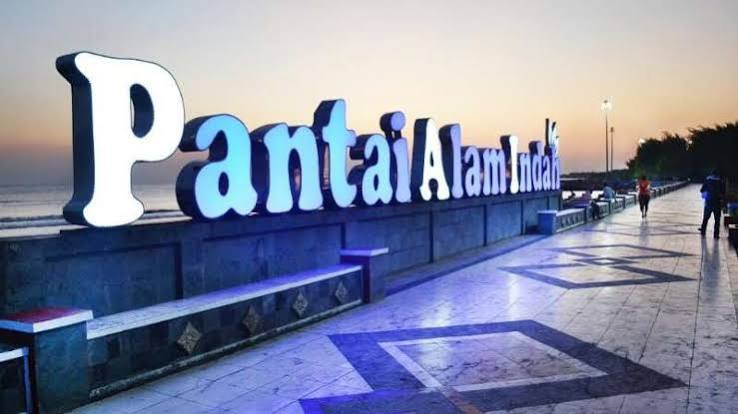
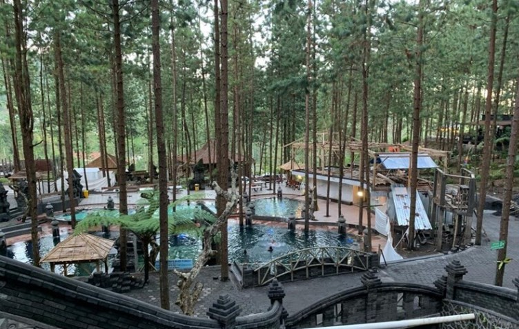

Jelajahi berbagai destinasi wisata terbaik di Indonesia

Pantai Kuta
pantai Kuta adalah salah satu destinasi wisata pantai paling ikonik dan terkenal yang terletak di Kecamatan Kuta, Kabupaten Badung, Bali. Menghadap langsung ke Samudra Hindia, pantai ini telah menjadi pusat pariwisata utama di Pulau Dewata sejak awal tahun 1970-an. Dahulunya, kawasan ini merupakan sebuah desa nelayan yang sepi sekaligus pelabuhan dagang aktif milik kerajaan Bali.
Lihat Detail

Gunung Bromo
Gunung Bromo adalah gunung berapi aktif yang terkenal dengan keindahan pemandangan matahari terbit dan lautan pasirnya, terletak di Jawa Timur serta mencakup empat wilayah kabupaten yaitu Probolinggo, Pasuruan, Lumajang, dan Malang.
Lihat Detail

Candi Borobudur
Candi Borobudur adalah candi Buddha terbesar di dunia, peninggalan Dinasti Syailendra, dan Situs Warisan Dunia UNESCO.
Lihat Detail

-
Kawah Putih
Kawah Putih adalah sebuah danau kawah vulkanik eksotis yang terletak di Ciwidey, Kabupaten Bandung, Jawa Barat. Berada di kaki Gunung Patuha, destinasi ini terkenal dengan air danaunya yang berwarna putih kehijauan atau hijau toska yang unik karena dapat berubah warna sesuai dengan kadar belerang, suhu, dan cuaca.
Lihat Detail

-
Gunung Rinjani
Percakapan Mode AI: gunung rinjanigunung rinjaniGunung Rinjani adalah gunung berapi aktif setinggi 3.726 meter di atas permukaan laut (mdpl) yang terletak di Pulau Lombok, Nusa Tenggara Barat. Gunung ini memegang predikat sebagai gunung berapi tertinggi kedua di Indonesia.
Lihat Detail

-
Raja Ampat
Raja Ampat adalah wilayah kepulauan yang terletak di barat Semenanjung Kepala Burung, Pulau Papua, dan secara administratif berada di bawah Provinsi Papua Barat Daya, Indonesia. Wilayah yang sering dijuluki sebagai "Surga Terakhir di Bumi" ini merupakan pusat keanekaragaman hayati laut tertinggi di dunia, rumah bagi lebih dari 75% spesies karang dunia serta ribuan jenis ikan tropis.
Lihat Detail

Pintu Langit Sky View
Pintu Langit Sky View merupakan salah satu destinasi wisata terpopuler di kawasan Dataran Tinggi Dieng, Wonosobo, Jawa Tengah, yang menawarkan lanskap spektakuler berupa hamparan awan dan pegunungan dari ketinggian sekitar 2.000 meter di atas permukaan laut.
Lihat Detail

-
Pantai Alam Indah
Pantai Alam Indah (PAI) adalah objek wisata bahari andalan di Kota Tegal, Jawa Tengah, yang menawarkan panorama Laut Jawa, Monumen Bahari, serta fasilitas rekreasi keluarga
Lihat Detail

-
Guci Forest
Guci Forest adalah salah satu destinasi wisata unggulan di Kabupaten Tegal, Jawa Tengah, yang memadukan keindahan alam hutan pinus dengan fasilitas rekreasi modern di kaki Gunung Slamet. Wisata ini terkenal karena suasananya yang sejuk karena berada di ketinggian sekitar 1.200 mdpl.
Lihat Detail